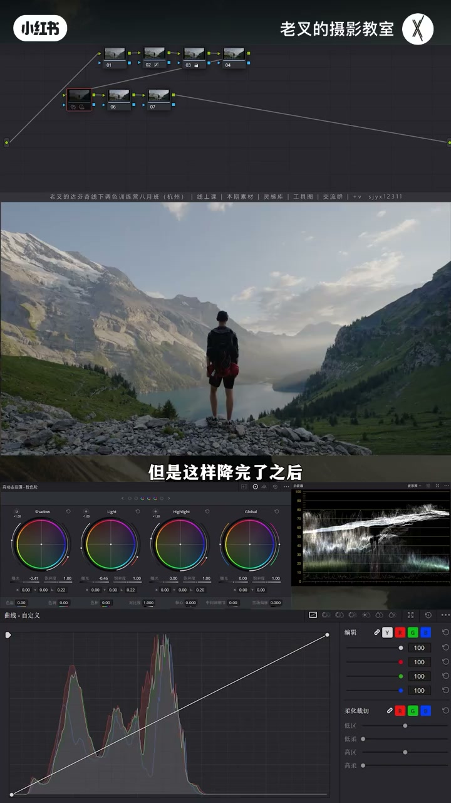
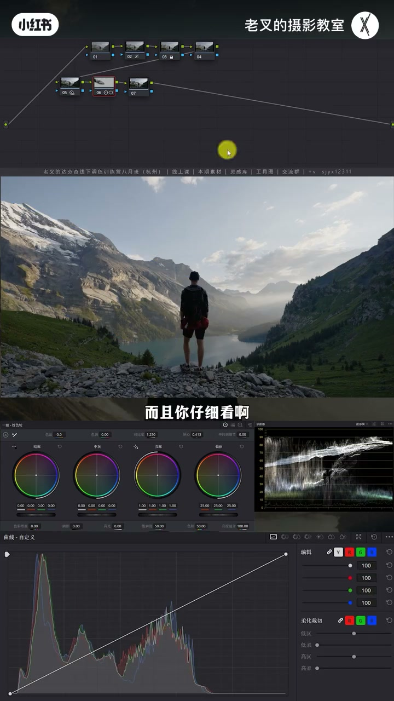
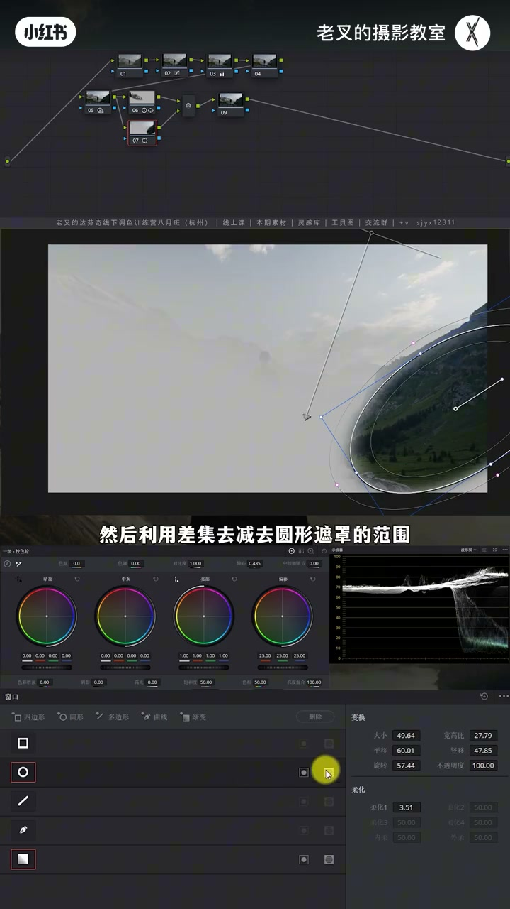
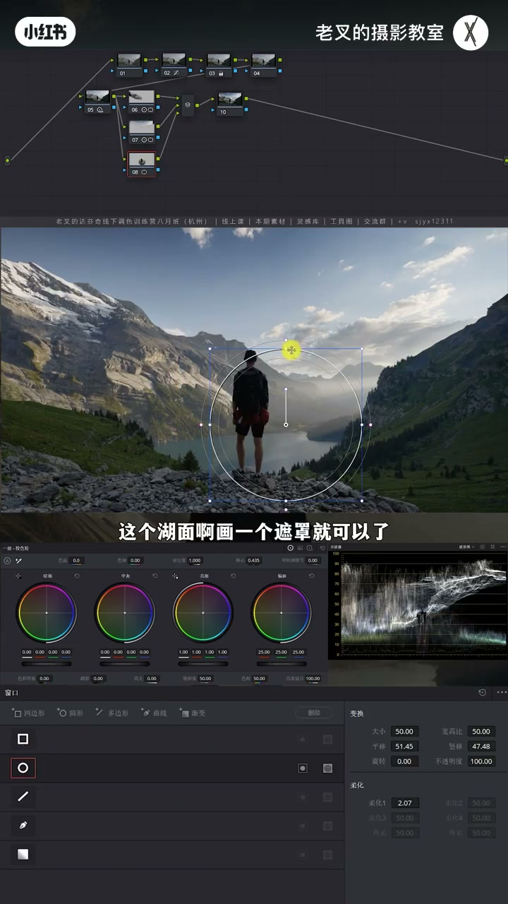
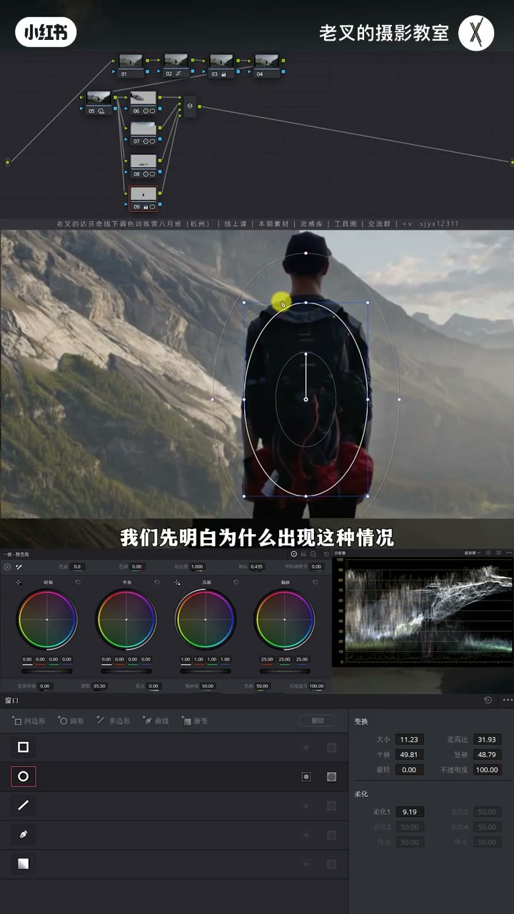
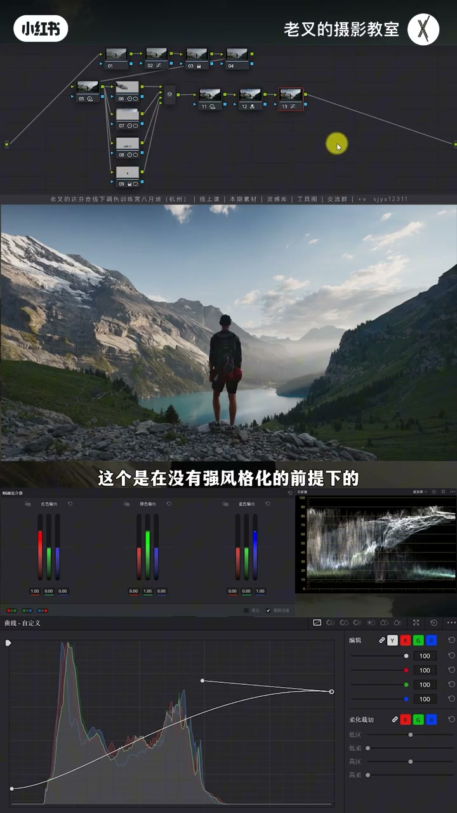

内容要点
老叉反对默认钢笔抠到像素级：钱到位可精细，否则优先偷懒。夕阳大场景先用 HDR 拉开影调，再演示四种选区——主体山大遮罩小力对比、渐变减规则山选天空、湖面遮罩靠轴心躲开人物、人物用小于目标的大柔化小遮罩防边缘泛白；最后青橙与电影感外观。重点是遮罩偷懒，不是炫技抠像。
知识结构
钢笔精细非首选；HDR 降 Light/Shadow、抬 Highlight，调范围护山受光。
左侧山才是主体：大遮罩小力加对比+轴心，边缘几乎看不见。
渐变顺光衰减选天，圆形山差集剪掉；天空比山暗、别抢戏。
湖遮罩加对比；轴心让腿上几乎无痕，比先抠限定器省事。
人物遮罩缩小于目标+大柔化提亮，防柔化圈外泛白。
RGB 混合器青橙+柔和对比度+外观；重复劳动要偷懒才有精力判断。
四种遮罩：大范围小力、渐变减规则物、调整躲开他物、小于目标的大柔化。力度小+偷懒选区，比钢笔抠细节更能持续出好片。
00:00-02:20钢笔精细非首选；先拉开夕阳影调
平台上常见钢笔抠到细节的遮罩教程——有时需要，但绝不是首选：太累，调色本就疲劳快，每镜都精细钱赚得太难。钱到位可精细；钱不够没必要。
还原后场景不错，但天空与远山空气不够通透、发灰，近处反差尚可，不宜用曲线硬拉全局。节点拉第二排：夕阳要高光柔和的大光比——降 Light 与 Shadow，再抬 Highlight 把高光找回来，并调左侧白色波杆让 Highlight 覆盖更多亮面；山体因中灰被压而闷，要找回高光又不能让天空刺眼，范围起点可略更暗以覆盖受光山体。

02:20-03:20方法一：主体山大遮罩，小力加对比
他遮罩很少抠很细，因为范围内从不做大力。主体未必是人物——本片左侧山更能体现生态、时间与地点。给山画遮罩略加对比、轴心略亮，山立体起来；带一点山外+柔化，不做对比几乎看不见痕迹。

03:20-04:20方法二：渐变选天，差集减去规则山
天空不规则，钢笔与限定器都麻烦。调整须符合光衰减：越远力度越小——渐变遮罩合适。右侧背光山挡住渐变时，再画圆遮罩并对圆点差集，快速选出天空。天空非主体、少细节可读，应比山暗：加对比后轴心右移压暗，避免抢戏。

04:20-05:40方法三：湖面遮罩，轴心躲开人物
碧绿小湖偏暗沉：直接画湖面遮罩加对比。为何有人先想限定器——人物在交叉位置也会被选中。改轴心后腿上几乎看不出，湖却更抢眼，一举两得。湖与人分开后再用限定器会更容易。本质：避不开他物时，让调整尽量不影响他物。

05:40-07:00方法四：小于目标的大柔化，防边缘泛白
人物上半身偏暗但波形未死黑。若遮罩边缘正好落在要调范围内再开柔化提亮，外围一圈易泛白——常见却难自察。原因是柔化范围：应把遮罩缩小到小于要调内容，同时保持较大柔化再提亮，外围不受影响。巩固时可略加对比或抬 Light、降 Shadow，让遮罩调整更融合。

07:00-08:44青橙收色、外观与「偷懒」价值
有暖有冷可 RGB 混合器做青橙：提高红输出中的红、降绿或蓝，天与湖更青、受光山更橙；再柔和对比度减刺眼与数码感。要强风格：新节点拖电影感外观创造器，微调白平衡与色调；可加 2.35:1 遮幅。
本期重点是遮罩不是调色炫技。重复性工作要偷懒：找到更多偷懒方式，才有精力高质量判断结果；被重复劳动搞累到排斥调色，就难出好片。有帮助就三连；本期完。

完整转录（342段）
以下文本由 Whisper medium 模型自动转录，可能存在少量识别误差，已尽可能修正。
不知道多少朋友看过各种平台上那种用钢笔一点一点去抠细节化制造的视频啊
这真的是有必要的行为吗
结论说在最前面
有可能需要
但是它一定不会是首选操作
为什么呀
因为太麻烦了
调色本身就是一个疲劳进展非常快的工作
你如果每个画面都搞得这么精细
那这个钱赚的也太难了
所以啊
如果钱到位
那你是应该要精细一点
那如果钱不够的话
其实我觉得没有特别大的必要啊
那我们该如何的
更便捷的去局部强化呢
比如说这个画面给他还原好之后
我们能够看到场景是比较优秀的
天空率有点遗憾
因为他的空气不够通透
远处的山河天空都太灰了
对吧
但是近处的反差还是不错的
所以我们不太能用除买等工具来做强化
那画面内容发挥或者是发布的原因
就是因为你的反差拉得不够开
所以呢
我们建立几个节点拉到第二排
在第二排的第一个节点上
我们要先给他拉开反差
我们观察画面
他是夕阳十分拍摄的对不对
而夕阳的影调质感
就是高光柔和的大光比质感
所以呢
我们可以考虑把他的中晖部分的曝光
给他往下降
也就是降低Light色轮的曝光
以及Shadow色轮的曝光
但是这样降完了之后
高光牺牲的太厉害对不对
所以呢
我们可以再提高一点Highlight色轮的曝光
来把他的高光给他保护住
让他找回来啊
稍微微调一下左侧白色波感
让他的这个范围能够覆盖到更多的亮面
好 我就到这个程度差不多
对于这个画面
我们怎么去判断Highlight色轮的范围
到底到哪里是个度啊
其实我个人看法
我是想让他在这一块的山体这里
因为我们降低了中晖部分的曝光
导致这里闷上加闷
所以呢
我要把他高光给他找回来
但找回来高光这件事情
我又不能让天空过于的刺眼对吧
我就到这个程度就差不多了
不能再亮了
那这个时候
这一处的受光面还不够强化
那我们就可以通过改变
Highlight色轮的范围
让他能够覆盖到更多的中晖面
也就是让他的范围的起点更暗
这样就能够让这一块
这一块的受光面的山体
能够立体起来
这是我的核心目的
然后就是今天的重点
遮罩的选择
看过我比较多视频的朋友都知道
我的遮罩很少会画得特别精细
最主要的原因就是
我在每个遮罩范围内的操作
都不会做的很大力
我们看这个画面主体是谁
大家可以发个弹幕来讨论一下
你觉得主体是人物吗
我觉得不是
因为我觉得这个场景中人物
他并不重要
左侧的山才重要
这个山更能够体现
这个生态也好
时间以及它的地点
所以我要给这个主体
也就是左侧这个山画一个遮罩
画好了遮罩之后
再给它加一点点对比度
我就是要让它更加立体
因为原本太灰了
加了对比度之后
然后再稍微微调一下
轴心让它亮一点点
我到这个层差不多
对吧 加了之后
它就变得立体了
而且你仔细看
我们如果能把轴心控制的好
遮罩边缘其实它根本不会很明显
其实我们这里稍微带上了
一点山体之外的位置
对不对
加上这个柔化的范围
但是我不做对比的话
你是看不到这个遮罩的痕迹的
然后就是天空
如果是大家的话
天空大家会怎么去做选区
肯定会有朋友这时候会用钢笔去抠
我们天空要单独去调整
而天空是个不规则的一个物体
如果用钢笔就太麻烦了
限电器更不用想
限电器大概率是选不上的
对于天空的调整
我们要先明确
不管你要怎么做
我们肯定要保证
你的行为要符合光衰减的情况
也就是越远
你这个强化的力度就越小
那既然是这样子
其实我们用一个渐变遮罩
就会变得非常合适
对吧
我们限定好了一个起始点和终点之后
能够看到画面中
右侧这个背光面的山体
就成了阻碍
对不对
那我们只需要
在右侧这里画一个遮罩
然后利用X几去剪去圆形遮罩的范围
谁背剪谁就点X几这个按钮
我们要剪的是圆形遮罩
那此时我们就基本上选出了天空
对不对
这就是第二种情况
用大范围遮罩
减去小范围规则物体的遮罩的方式
来快速选择不规则的物体
那这个画面中
右侧这个山体是相对规则的
而天空是不规则的
那选出来了之后
我们要做什么样的行为
那其实还是一样
我们要增加它的反差
让它更加立体
现在太灰了
所以我们快速的增加一点点对比度
要注意的一点就是
天空它对这个画面来讲
它肯定不会是主体
因为它没有什么细节可以去阅读
所以我要让它比这个山要暗
不能让它太抢袭
如果你这里太亮的话
你画面视觉中心全部都聚焦在
这个天空上了
所以我把轴心向右移动了一点
让它能够暗一点
暗一点之后
天气也能变得更好
第三个区域就是底下这个湖
这里有个小湖
这个湖其实挺好看的
颜色碧绿碧绿的
但是它目前太暗沉了
所以我们需要给它单独强化
这时候选区该怎么做
有朋友会说我用信电器
信电器能不能选
一定选得出来
但是好麻烦
对吧
永远逃不开一个麻烦两个字
我们要选信电器
我得用各种的参数去动
有没有更方便的一个方式
其实我们直接给这个水面
这个湖面画一个遮罩就可以了
然后给它增加对比度
加了对比度之后
这里变暗了
对不对
而且最重要的就是
我们为什么一开始要选择用信电器
就是因为人物也在这个交叉的位置
它也会被选中一部分
所以这个时候我们可以改变轴心
此时我们能看到
这个改变在腿上
几乎看不出来
对不对
而且提亮了之后
也能让这个湖更加的明显
更加的亮一眼
这就是一举两得的一个行为
在这个时候
因为你已经把湖改变好了
它与人物区分的更加明显
此时你再用信电器去选
你会发现就会变得更加简单了
那么这就是第三种情况
当我们无法避开其他物体的时候
想办法让你的调整
不影响其他的物体
在最后
我觉得这个人物稍微暗了一点点
主要就是它身上
上半身有细节
我们能看到波信图
它其实没有死黑
但太暗了
所以我们这个时候
也给它画一个遮罩
这个遮罩该怎么画
这就很有意思了
如果说我要给它画得特别准
大家都知道
遮罩画完要开柔化
那我这个中心点的这个边缘
如果正好在
我们要调整的这个范围内
就算我不要把这个脖子选中了
我只要它上半身
这个时候提亮它
能够看到
我提高了它的曝光之后
它在外围一圈会有点泛白
对不对
这也是非常常见的一个情况
也是大部分朋友会遇到的
但他们自己可能看不太出来
而且我们提高的力度
其实并没有很大
那这个时候该怎么办呢
我们先明白
为什么会出现这种情况
其实它的原因就是
因为柔化的范围导致了
这个边缘出现了
这种泛白的一个情况
所以我们要做的就是
遮罩给它缩小
让它小于要调整的内容
同时保持柔化
开的相对比较大的一个情况下
再去给它提亮
那这个时候你不管怎么去调
它都不会在你要调整的这个物体外围
去产生一定的影响
所以我们在调整的时候
要注意遮罩的范围
不只是在中间这个圈
外围柔化的圈也要去注意
那么这就是第四种情况
小范围的大柔化遮罩
那此时我们可以看一下
能够让画面分区强化的同时
你还不会觉得
画面中哪里有遮罩的痕迹
再然后我们可以稍微巩固一下
加一点点对比度
或者是提高一点点
Light Serum的曝光
降低一点Shadow Serum的曝光
这个行为同样也是能够
让这个遮罩的调整更加的融合
再往后呢就可以去调颜色了
画面中有暖色元素
有冷色元素
所以我们可以考虑来一个
青橙色调
用RGB混合器
提高红色输出中的
红色通道的数值
然后降低绿色通道的数值
或者是蓝色通道也可以
能看到这些该变轻的
变轻了天空跟湖面
然后在这一次受光面的山体
它也能够更往橙色方向去走
那此时这样的一个效果
我觉得是比较满意的
再给它来一个柔和对比度
因为有高光有暗部
所以一般来讲
我都会给画面来个柔和对比度
让画面能够不刺眼的同时
还能减少一点点数码感
好我就到这个程度差不多
我们与还原后的画面做一下对比
这是还原后的画面
这是我们调好的画面
是不是很不错
而且这个是在没有强风狗化的前提下的
如果这个时候
你想要有一个强风狗化怎么办呢
很简单
不需要去做任何额外的操作
只需要在新建一个节点
然后把19版本更新后自带的一个
电影感外观创作器
给它拖到新建的节点中
然后可以根据你的需求
稍微微调一下白平衡和色调
我觉得让它能够稍微暖一点点
然后色调往右边走一点点
好我就到这个程度差不多
对不对
这样的效果
也就是一个铝牌的电影感的效果也有了
你如果愿意的话
可以给它加一个2.35比1的遮浮
那这个味道就很棒很棒了
那今天这一期
重点讲的其实是遮罩的问题
不是调色的问题
在我们调色这种重复性比较高的工作中
我们一定要想尽一切办法去偷懒的
大家不要觉得偷懒是件不好的事情
因为你只有找到更多偷懒的方式
你才能够有更多的精力去
对每一个结果去有一个更高质量的判断
如果说你因为一些重复工作
给你搞得特别累
你已经下意识的去排斥调色了
那你怎么可能会做出一个好的结果呢
对不对
那讲到这里
如果你觉得你有帮助的话
还希望多多三连
好了
这期就到这里
886